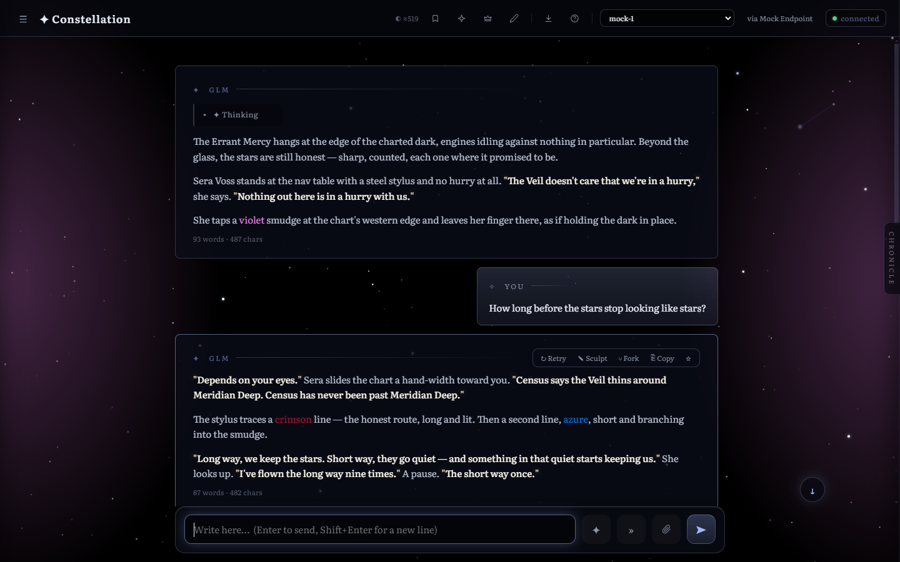
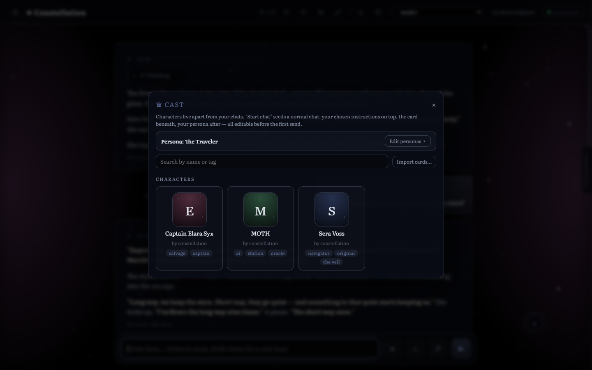

a private, local-first writing companion — set against a night sky that remembers your story
Constellation is a calm Windows desktop studio for long-form AI fiction and roleplay. Bring your own API key — GLM out of the box, or any OpenAI-compatible provider — and write. No accounts. No setup. No server.
Free and open source (MIT) — your key, your machine, your files.
Constellation isn't a replacement — no extension ecosystem, no character hub, no server to run. It's a different animal: a bring-your-own-key chat harness that arrives already set up, with SillyTavern-adjacent features. Character cards (chara_card_v2, PNG or JSON), presets, and lorebooks import cleanly — the rest is its own thing.
If you want your stories in a book rather than a dashboard, it might be for you.

The reading view — a dialogue voice steps spoken lines out of the narration; the sky weathers the story.
Entries watch the scene and ride along only when they matter — keys with word boundaries and wildcards, priorities, linger and cooldown, a bench to test what fires. Long worlds stop costing whole contexts.
Fenced text becomes glass set into the reply — deck logs, comms threads, placards, found letters, redacted records. The model writes plain fences; the page does the rest.
Characters, places, threads and statuses — captured from your own story, kept local, editable. Never misremember your own plot again.
Chats, lorebooks and settings are files on your disk. The optional backup is one JSON you can read. Nothing else sees your writing.

The Cast — characters as portrait tiles; the full card renders exactly as the model receives it.
Five short manuals live with the repo — the diegetic panes, the immersion grammar, lorebook authoring, macros, and the context system map — everything a model needs to be shown, not told.